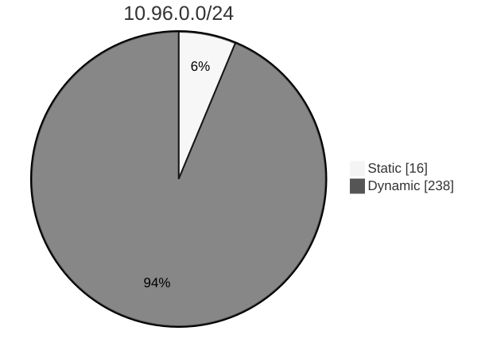
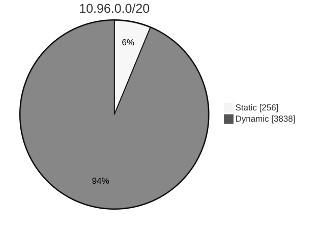
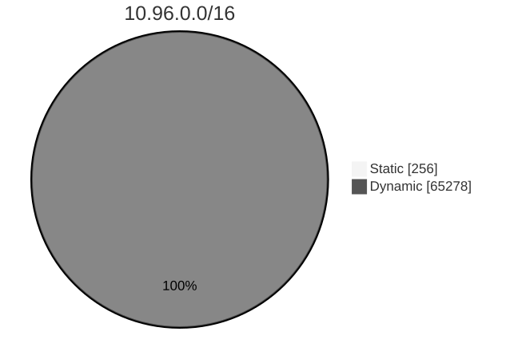

In Kubernetes, Services are an
abstract way to expose an application running on a set of Pods. Services
can have a cluster-scoped virtual IP address (using a Service of
type: ClusterIP). Clients can connect using that virtual IP
address, and Kubernetes then load-balances traffic to that Service
across the different backing Pods.
How Service ClusterIPs are allocated?
When Kubernetes needs to assign a virtual IP address for a Service, that assignment happens one of two ways:
- dynamically
-
the cluster's control plane automatically picks a free IP address from
within the configured IP range for
type: ClusterIPServices. - statically
- you specify an IP address of your choice, from within the configured IP range for Services.
Across your whole cluster, every Service ClusterIP must
be unique. Trying to create a Service with a specific
ClusterIP that has already been allocated will return an
error.
Why do you need to reserve Service Cluster IPs?
Sometimes you may want to have Services running in well-known IP addresses, so other components and users in the cluster can use them.
The best example is the DNS Service for the cluster. As a soft convention, some Kubernetes installers assign the 10th IP address from the Service IP range to the DNS service. Assuming you configured your cluster with Service IP range 10.96.0.0/16 and you want your DNS Service IP to be 10.96.0.10, you'd have to create a Service like this:
apiVersion: v1
kind: Service
metadata:
labels:
k8s-app: kube-dns
kubernetes.io/cluster-service: "true"
kubernetes.io/name: CoreDNS
name: kube-dns
namespace: kube-system
spec:
clusterIP: 10.96.0.10
ports:
- name: dns
port: 53
protocol: UDP
targetPort: 53
- name: dns-tcp
port: 53
protocol: TCP
targetPort: 53
selector:
k8s-app: kube-dns
type: ClusterIPBut, as it was explained before, the IP address 10.96.0.10 has not been reserved. If other Services are created before or in parallel with dynamic allocation, there is a chance they can allocate this IP. Hence, you will not be able to create the DNS Service because it will fail with a conflict error.
How can you avoid Service ClusterIP conflicts?
The allocation strategy implemented in Kubernetes to allocate ClusterIPs to Services reduces the risk of collision.
The ClusterIP range is divided, based on the formula
min(max(16, cidrSize / 16), 256), described as never
less than 16 or more than 256 with a graduated step between
them.
Dynamic IP assignment uses the upper band by default, once this has been exhausted it will use the lower range. This will allow users to use static allocations on the lower band with a low risk of collision.
Examples
Example 1
This example uses the IP address range: 10.96.0.0/24 (CIDR notation) for the IP addresses of Services.
Range Size: 28 - 2 = 254
Band Offset: min(max(16, 256/16), 256) =
min(16, 256) = 16
Static band start: 10.96.0.1
Static band end: 10.96.0.16
Range end: 10.96.0.254

Example 2
This example uses the IP address range: 10.96.0.0/20 (CIDR notation) for the IP addresses of Services.
Range Size: 212 - 2 = 4094
Band Offset: min(max(16, 4096/16), 256) =
min(256, 256) = 256
Static band start: 10.96.0.1
Static band end: 10.96.1.0
Range end: 10.96.15.254

Example 3
This example uses the IP address range: 10.96.0.0/16 (CIDR notation) for the IP addresses of Services.
Range Size: 216 - 2 = 65534
Band Offset: min(max(16, 65536/16), 256) =
min(4096, 256) = 256
Static band start: 10.96.0.1
Static band ends: 10.96.1.0
Range end: 10.96.255.254

What's next
- Read about Service External Traffic Policy
- Read about Connecting Applications with Services
- Read about Services